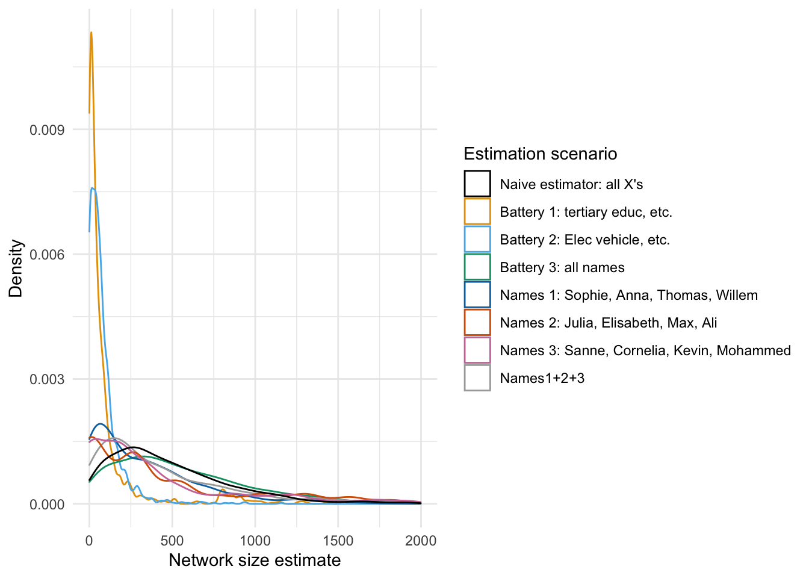
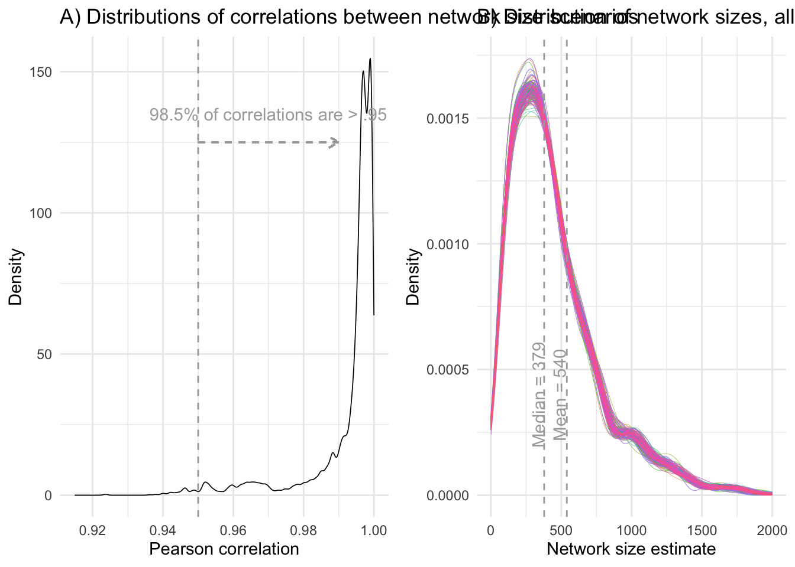

Last compiled on November, 2023
This is the code with which we render our descriptive analyses
Initatiating R
environment
Start out with a custom function to load a set of required
packages.
# packages and read data
rm(list = ls())
# (c) Jochem Tolsma
fpackage.check <- function(packages) {
lapply(packages, FUN = function(x) {
if (!require(x, character.only = TRUE)) {
install.packages(x, dependencies = TRUE)
library(x, character.only = TRUE)
}
})
}
packages = c("haven", "coda", "matrixStats", "parallel", "MASS", "doParallel", "dplyr", "cowplot", "tidyverse",
"naniar", "dotwhisker", "gt", "reshape2", "VGAM", "expss", "Hmisc")
fpackage.check(packages)
#> [[1]]
#> NULL
#>
#> [[2]]
#> NULL
#>
#> [[3]]
#> NULL
#>
#> [[4]]
#> NULL
#>
#> [[5]]
#> NULL
#>
#> [[6]]
#> NULL
#>
#> [[7]]
#> NULL
#>
#> [[8]]
#> NULL
#>
#> [[9]]
#> NULL
#>
#> [[10]]
#> NULL
#>
#> [[11]]
#> NULL
#>
#> [[12]]
#> NULL
#>
#> [[13]]
#> NULL
#>
#> [[14]]
#> NULL
#>
#> [[15]]
#> NULL
#>
#> [[16]]
#> NULL
rm(packages)
load("data/dutch_netsize_analyses.rda")
Descriptives
independent variables
The code below generates the descriptive values which are used for
Tables 1 and 2.
# descriptive table not automated: TABLE 1
table(df$work)
#>
#> 0 1
#> 583 666
psych::describe(df$work)
#> vars n mean sd median trimmed mad min max range skew kurtosis se
#> X1 1 1249 0.53 0.5 1 0.54 0 0 1 1 -0.13 -1.98 0.01
psych::describe(df$hhsize)
#> vars n mean sd median trimmed mad min max range skew kurtosis se
#> X1 1 1249 2.13 1.12 2 1.98 1.48 1 8 7 1.34 2.26 0.03
table(df$migr3)
#>
#> 1 2 3
#> 1131 62 56
# 1 Maj 2 west 3 nonwest
table(df$agecat)
#> < table of extent 0 >
table(df$income)
#>
#> 1 2 3
#> 627 440 182
# 1 < modal 2 > modal 3 unknown
psych::describe(df$worthhouse)
#> vars n mean sd median trimmed mad min max range skew kurtosis se
#> X1 1 1249 2.67 0.89 2.54 2.58 0.73 0.95 9.96 9.01 1.75 7.12 0.03
table(df$woman)
#>
#> 0 1
#> 609 640
psych::describe(df$woman)
#> vars n mean sd median trimmed mad min max range skew kurtosis se
#> X1 1 1249 0.51 0.5 1 0.52 0 0 1 1 -0.05 -2 0.01
table(df$opl)
#>
#> 3 1 2
#> 644 292 313
# 1 prim/sec 2 lower tert 3 higher tert
# psych::describe(df$neighdens)
# this is for the correlation table df$educ3 <- df$opl df$educ3 <-
# as.numeric(as.character(df$educ3))
cor(as.matrix(df[df$income != 3, c("income", "worthhouse")]))
#> income worthhouse
#> income 1.0000000 0.2016649
#> worthhouse 0.2016649 1.0000000
# rcorr(as.matrix(df[,c('work', 'hhsize', 'leeftijd10', 'woman', 'educ3', 'neighdens', 'worthhouse'
# )]), type = 'pearson')
Comparing naive
estimations
The code below generates Figure 1 from the paper and runs a number of
correlations found on page X.
comps <- gather(df[, c("nsize_naive", "nsize_b1b2", "nsize_b3", "nsize_n1", "nsize_n2", "nsize_n3", "nsize_n123")])
comparisons <- ggplot(comps[comps$value < 2000, ], aes(x = value, color = key)) + geom_density(size = 0.5) +
theme_minimal() + labs(x = "Network size estimate", y = "Density") + scale_color_manual(name = "Estimation scenario",
breaks = c("nsize_naive", "nsize_b1b2", "nsize_b3", "nsize_n1", "nsize_n2", "nsize_n3", "nsize_n123"),
labels = c("Naive estimator: all X's", "Battery 1: Tert. educ., elec vehicle, etc.", "Battery 2: all names",
"Names 1: Sophie, Anna, Thomas, Willem", "Names 2: Julia, Elisabeth, Max, Ali", "Names 3: Sanne, Cornelia, Kevin, Mohammed",
"Names1+2+3"), values = c("#000000", "#E69F00", "#56B4E9", "#009E73", "#0072B2", "#D55E00", "#CC79A7",
"darkgrey"))
# save
ggsave("output/comparisons.pdf", plot = comparisons, device = "pdf", scale = 1, width = 10, height = 5.5,
units = c("in"), dpi = "retina")
# # correlation battery 1 and 2 cor(df$nsize_b1, df$nsize_b2) # correlation battery 1 and all
# cor(df$nsize_b1, df$nsize_naive)
# correlation battery 1+2 and all
cor(df$nsize_b1b2, df$nsize_naive)
#> [1] 0.4870176
# correlation battery 3 (names) and all
cor(df$nsize_b3, df$nsize_naive)
#> [1] 0.9377085
# correlation names 1 and all
cor(df$nsize_n1, df$nsize_naive)
#> [1] 0.527189
# correlation names 2 and all
cor(df$nsize_n2, df$nsize_naive)
#> [1] 0.6169219
# correlation names 3 and all
cor(df$nsize_n3, df$nsize_naive)
#> [1] 0.6477284
# correlation names 123 and all
cor(df$nsize_n123, df$nsize_naive)
#> [1] 0.7753703
# sample 5 columns of scenarios and correlate with naive estimand
set.seed(1987)
sample(13:183, 5)
#> [1] 85 36 150 14 125
# correlation scenario 85 and naive
cor(df$nsize_naive, df[, 85])
#> [1] 0.4998704
# correlation scenario 36 and naive
cor(df$nsize_naive, df[, 36])
#> [1] 0.4914943
# correlation scenario 150 and naive
cor(df$nsize_naive, df[, 150])
#> [1] 0.4615957
# correlation scenario 14 and naive
cor(df$nsize_naive, df[, 14])
#> [1] 0.4493968
# correlation scenario 125 and naive
cor(df$nsize_naive, df[, 125])
#> [1] 0.4664837
comparisons

Comparing Bayesian
estimations
The code below generates Figure 2 from the paper associated with the
text on page X.
netsizes <- read.table(file = "data/dutch_netsize_desc.txt")
# VIZ of netsize
netsize_l <- gather(netsizes)
dens1 <- ggplot(netsize_l[netsize_l$value < 2000, ], aes(x = value, color = key)) + geom_density(alpha = 0.2,
size = 0.1) + theme_minimal() + theme(legend.position = "none") + labs(x = "Network size estimate",
y = "Density") + geom_vline(xintercept = as.numeric(psych::describe(netsize_l[, 2])[3]), color = "darkgrey",
linetype = 2) + geom_vline(xintercept = as.numeric(psych::describe(netsize_l[, 2])[5]), color = "darkgrey",
linetype = 2) + annotate("text", x = 490, y = 4e-04, color = "darkgrey", angle = 90, label = paste0("Mean = ",
round(as.numeric(psych::describe(netsize_l[, 2])[3]), digits = 0))) + annotate("text", x = 340, y = 4e-04,
color = "darkgrey", angle = 90, label = paste0("Median = ", round(as.numeric(psych::describe(netsize_l[,
2])[5]), digits = 0))) + ggtitle("B) Distribution of network sizes, all scenarios")
# Get lower triangle of the correlation matrix
get_lower_tri <- function(cormat) {
cormat[upper.tri(cormat)] <- NA
return(cormat)
}
mat <- cor(netsizes)
lower_tri <- get_lower_tri(mat)
melted_cormat <- reshape2::melt(lower_tri) # data.table also has melt funciton that won't work on matrices
melted_cormat$Var2 <- as.character(melted_cormat$Var2)
melted_cormat$Var1 <- as.character(melted_cormat$Var1)
melted_cormat <- melted_cormat[!melted_cormat$Var2 == melted_cormat$Var1, ]
melted_cormat <- melted_cormat[!is.na(melted_cormat$value), ]
# Viz of correlations between netsize estimates
dens2 <- ggplot(melted_cormat, aes(x = value)) + geom_density(size = 0.3) + xlim(0.915, 1) + theme_minimal() +
labs(x = "Pearson correlation", y = "Density") + geom_vline(xintercept = 0.95, color = "darkgrey",
linetype = 2) + ggtitle("A) Distributions of correlations between network size scenarios") + geom_segment(x = 0.95,
y = 125, xend = 0.99, yend = 125, linetype = 2, color = "darkgrey", arrow = arrow(length = unit(0.25,
"cm"))) + annotate("text", x = 0.97, y = 135, color = "darkgrey", angle = 0, label = paste0(round(nrow(melted_cormat[melted_cormat$value >
0.95, ])/nrow(melted_cormat) * 100, digits = 1), "% of correlations are > .95"))
# lay 'm out on the grid
denses <- plot_grid(dens2, dens1, nrow = 1)
# save
ggsave("output/densities.pdf", plot = denses, device = "pdf", scale = 1, width = 12, height = 4, units = c("in"),
dpi = "retina")
denses

Ci0tLQp0aXRsZTogIkRlc2NyaXB0aXZlIGFuYWx5c2VzIgojYmlibGlvZ3JhcGh5OiByZWZlcmVuY2VzLmJpYgphdXRob3I6ICJCYXMgSG9mc3RyYSIKLS0tCgpgYGB7ciwgZ2xvYmFsc2V0dGluZ3MsIGVjaG89RkFMU0UsIHdhcm5pbmc9RkFMU0UsIHJlc3VsdHM9J2hpZGUnfQpsaWJyYXJ5KGtuaXRyKQoKa25pdHI6Om9wdHNfY2h1bmskc2V0KGVjaG8gPSBUUlVFKQpvcHRzX2NodW5rJHNldCh0aWR5Lm9wdHM9bGlzdCh3aWR0aC5jdXRvZmY9MTAwKSx0aWR5PVRSVUUsIHdhcm5pbmcgPSBGQUxTRSwgbWVzc2FnZSA9IEZBTFNFLGNvbW1lbnQgPSAiIz4iLCBjYWNoZT1UUlVFLCBjbGFzcy5zb3VyY2U9YygidGVzdCIpLCBjbGFzcy5vdXRwdXQ9YygidGVzdDIiKSkKb3B0aW9ucyh3aWR0aCA9IDEwMCkKcmdsOjpzZXR1cEtuaXRyKCkKCgoKY29sb3JpemUgPC0gZnVuY3Rpb24oeCwgY29sb3IpIHtzcHJpbnRmKCI8c3BhbiBzdHlsZT0nY29sb3I6ICVzOyc+JXM8L3NwYW4+IiwgY29sb3IsIHgpIH0KCmBgYAoKYGBge3Iga2xpcHB5LCBlY2hvPUZBTFNFLCBpbmNsdWRlPVRSVUV9CmtsaXBweTo6a2xpcHB5KHBvc2l0aW9uID0gYygndG9wJywgJ3JpZ2h0JykpCiNrbGlwcHk6OmtsaXBweShjb2xvciA9ICdkYXJrcmVkJykKI2tsaXBweTo6a2xpcHB5KHRvb2x0aXBfbWVzc2FnZSA9ICdDbGljayB0byBjb3B5JywgdG9vbHRpcF9zdWNjZXNzID0gJ0RvbmUnKQpgYGAKCkxhc3QgY29tcGlsZWQgb24gYHIgZm9ybWF0KFN5cy50aW1lKCksICclQiwgJVknKWAKCjxicj4KCi0tLS0KClRoaXMgaXMgdGhlIGNvZGUgd2l0aCB3aGljaCB3ZSByZW5kZXIgb3VyIGRlc2NyaXB0aXZlIGFuYWx5c2VzCgo8YnI+CgotLS0tCgojIEluaXRhdGlhdGluZyBSIGVudmlyb25tZW50CgpTdGFydCBvdXQgd2l0aCBhIGN1c3RvbSBmdW5jdGlvbiB0byBsb2FkIGEgc2V0IG9mIHJlcXVpcmVkIHBhY2thZ2VzLgogIApgYGB7ciBwYWNrLCBldmFsPVRSVUV9CiMgcGFja2FnZXMgYW5kIHJlYWQgZGF0YQpybShsaXN0ID0gbHMoKSkKCiMgKGMpIEpvY2hlbSBUb2xzbWEKZnBhY2thZ2UuY2hlY2sgPC0gZnVuY3Rpb24ocGFja2FnZXMpIHsKICBsYXBwbHkocGFja2FnZXMsIEZVTiA9IGZ1bmN0aW9uKHgpIHsKICAgIGlmICghcmVxdWlyZSh4LCBjaGFyYWN0ZXIub25seSA9IFRSVUUpKSB7CiAgICAgIGluc3RhbGwucGFja2FnZXMoeCwgZGVwZW5kZW5jaWVzID0gVFJVRSkKICAgICAgbGlicmFyeSh4LCBjaGFyYWN0ZXIub25seSA9IFRSVUUpCiAgICB9CiAgfSkKfQpwYWNrYWdlcyA9IGMoImhhdmVuIiwgImNvZGEiLCAibWF0cml4U3RhdHMiLCAicGFyYWxsZWwiLCAiTUFTUyIsICJkb1BhcmFsbGVsIiwgImRwbHlyIiwgImNvd3Bsb3QiLCAKICAgICAgICAgICAgICJ0aWR5dmVyc2UiLCAibmFuaWFyIiwgImRvdHdoaXNrZXIiICwiZ3QiLCAicmVzaGFwZTIiLCAiVkdBTSIsICJleHBzcyIsICJIbWlzYyIpCmZwYWNrYWdlLmNoZWNrKHBhY2thZ2VzKQpybShwYWNrYWdlcykKbG9hZCgiZGF0YS9kdXRjaF9uZXRzaXplX2FuYWx5c2VzLnJkYSIpCmBgYAo8YnI+CgotLS0tCgojIERlc2NyaXB0aXZlcyBpbmRlcGVuZGVudCB2YXJpYWJsZXMKClRoZSBjb2RlIGJlbG93IGdlbmVyYXRlcyB0aGUgZGVzY3JpcHRpdmUgdmFsdWVzIHdoaWNoIGFyZSB1c2VkIGZvciBUYWJsZXMgMSBhbmQgMi4KICAKCmBgYHtyIGRlc2NpbmQsIGV2YWwgPSBUUlVFfQoKCgoKIyBkZXNjcmlwdGl2ZSB0YWJsZSBub3QgYXV0b21hdGVkOiBUQUJMRSAxCnRhYmxlKGRmJHdvcmspCnBzeWNoOjpkZXNjcmliZShkZiR3b3JrKQpwc3ljaDo6ZGVzY3JpYmUoZGYkaGhzaXplKQoKCnRhYmxlKGRmJG1pZ3IzKQojIDEgTWFqCiMgMiB3ZXN0CiMgMyBub253ZXN0Cgp0YWJsZShkZiRhZ2VjYXQpCgp0YWJsZShkZiRpbmNvbWUpCiMgMSA8IG1vZGFsCiMgMiA+IG1vZGFsCiMgMyB1bmtub3duCgpwc3ljaDo6ZGVzY3JpYmUoZGYkd29ydGhob3VzZSkKCgp0YWJsZShkZiR3b21hbikKcHN5Y2g6OmRlc2NyaWJlKGRmJHdvbWFuKQoKdGFibGUoZGYkb3BsKQojIDEgcHJpbS9zZWMKIyAyIGxvd2VyIHRlcnQKIyAzIGhpZ2hlciB0ZXJ0CgojcHN5Y2g6OmRlc2NyaWJlKGRmJG5laWdoZGVucykKCgojIHRoaXMgaXMgZm9yIHRoZSBjb3JyZWxhdGlvbiB0YWJsZQojZGYkZWR1YzMgPC0gZGYkb3BsCiNkZiRlZHVjMyA8LSBhcy5udW1lcmljKGFzLmNoYXJhY3RlcihkZiRlZHVjMykpCgpjb3IoYXMubWF0cml4KGRmW2RmJGluY29tZSE9MyxjKCJpbmNvbWUiLCJ3b3J0aGhvdXNlIildKSkKCiNyY29ycihhcy5tYXRyaXgoZGZbLGMoIndvcmsiLCAiaGhzaXplIiwgImxlZWZ0aWpkMTAiLCAid29tYW4iLCAiZWR1YzMiLCAibmVpZ2hkZW5zIiwgIndvcnRoaG91c2UiICldKSwgdHlwZSA9ICJwZWFyc29uIikKCmBgYAoKPGJyPgoKLS0tLQoKIyBDb21wYXJpbmcgbmFpdmUgZXN0aW1hdGlvbnMKClRoZSBjb2RlIGJlbG93IGdlbmVyYXRlcyBGaWd1cmUgMSBmcm9tIHRoZSBwYXBlciBhbmQgcnVucyBhIG51bWJlciBvZiBjb3JyZWxhdGlvbnMgZm91bmQgb24gcGFnZSBYLgogIAoKYGBge3IgbmFpY29tcHMsIGV2YWwgPSBUUlVFfQoKY29tcHMgPC0gZ2F0aGVyKGRmWywgYygibnNpemVfbmFpdmUiLCAibnNpemVfYjFiMiIsICJuc2l6ZV9iMyIsICJuc2l6ZV9uMSIsICJuc2l6ZV9uMiIsICJuc2l6ZV9uMyIsICJuc2l6ZV9uMTIzIildKQoKY29tcGFyaXNvbnMgPC0gZ2dwbG90KGNvbXBzW2NvbXBzJHZhbHVlIDwgMjAwMCwgXSwgYWVzKHg9dmFsdWUsIGNvbG9yID0ga2V5KSkgKyAKICBnZW9tX2RlbnNpdHkoc2l6ZSA9IDAuNSkgKyAKICB0aGVtZV9taW5pbWFsKCkgKwogIGxhYnMoeCA9ICJOZXR3b3JrIHNpemUgZXN0aW1hdGUiLCB5ID0gIkRlbnNpdHkiKSArCiAgc2NhbGVfY29sb3JfbWFudWFsKG5hbWUgPSAiRXN0aW1hdGlvbiBzY2VuYXJpbyIsIAogICAgICAgICAgICAgICAgICAgICAgYnJlYWtzID0gYygibnNpemVfbmFpdmUiLCAibnNpemVfYjFiMiIsICJuc2l6ZV9iMyIsICJuc2l6ZV9uMSIsICJuc2l6ZV9uMiIsICJuc2l6ZV9uMyIsICJuc2l6ZV9uMTIzIiksIAogICAgICAgICAgICAgICAgICAgICAgIGxhYmVscyA9IGMoIk5haXZlIGVzdGltYXRvcjogYWxsIFgncyIsIAogICAgICAgICAgICAgICAgICAgICAgICAgICAgICAgICAgIkJhdHRlcnkgMTogVGVydC4gZWR1Yy4sIGVsZWMgdmVoaWNsZSwgZXRjLiIsIAogICAgICAgICAgICAgICAgICAgICAgICAgICAgICAgICAgIkJhdHRlcnkgMjogYWxsIG5hbWVzIiwgCiAgICAgICAgICAgICAgICAgICAgICAgICAgICAgICAgICAiTmFtZXMgMTogU29waGllLCBBbm5hLCBUaG9tYXMsIFdpbGxlbSIsIAogICAgICAgICAgICAgICAgICAgICAgICAgICAgICAgICAgIk5hbWVzIDI6IEp1bGlhLCBFbGlzYWJldGgsIE1heCwgQWxpIiwKICAgICAgICAgICAgICAgICAgICAgICAgICAgICAgICAgICJOYW1lcyAzOiBTYW5uZSwgQ29ybmVsaWEsIEtldmluLCBNb2hhbW1lZCIsCiAgICAgICAgICAgICAgICAgICAgICAgICAgICAgICAgICAiTmFtZXMxKzIrMyIpLAogICAgICAgICAgICAgICAgICAgICB2YWx1ZXMgPSBjKCIjMDAwMDAwIiwgIiNFNjlGMDAiLCAiIzU2QjRFOSIsICIjMDA5RTczIiwgCiAgICAgICAgICAgICAgICAgICAgICAgICAgIiMwMDcyQjIiLCAiI0Q1NUUwMCIsICIjQ0M3OUE3IiwgImRhcmtncmV5IikpCgojIHNhdmUKZ2dzYXZlKCJvdXRwdXQvY29tcGFyaXNvbnMucGRmIiwgcGxvdCA9IGNvbXBhcmlzb25zLCBkZXZpY2UgPSAicGRmIiwKICAgICAgIHNjYWxlID0gMSwgd2lkdGggPSAxMCwgaGVpZ2h0ID0gNS41LCB1bml0cyA9IGMoImluIiksCiAgICAgICBkcGkgPSAicmV0aW5hIikKCgoKIyAjIGNvcnJlbGF0aW9uIGJhdHRlcnkgMSBhbmQgMgojIGNvcihkZiRuc2l6ZV9iMSwgZGYkbnNpemVfYjIpCiMgCiMgIyBjb3JyZWxhdGlvbiBiYXR0ZXJ5IDEgYW5kIGFsbAojIGNvcihkZiRuc2l6ZV9iMSwgZGYkbnNpemVfbmFpdmUpCgojIGNvcnJlbGF0aW9uIGJhdHRlcnkgMSsyIGFuZCBhbGwKY29yKGRmJG5zaXplX2IxYjIsIGRmJG5zaXplX25haXZlKQoKIyBjb3JyZWxhdGlvbiBiYXR0ZXJ5IDMgKG5hbWVzKSBhbmQgYWxsCmNvcihkZiRuc2l6ZV9iMywgZGYkbnNpemVfbmFpdmUpCgojIGNvcnJlbGF0aW9uIG5hbWVzIDEgYW5kIGFsbApjb3IoZGYkbnNpemVfbjEsIGRmJG5zaXplX25haXZlKQoKIyBjb3JyZWxhdGlvbiBuYW1lcyAyIGFuZCBhbGwKY29yKGRmJG5zaXplX24yLCBkZiRuc2l6ZV9uYWl2ZSkKCiMgY29ycmVsYXRpb24gbmFtZXMgMyBhbmQgYWxsCmNvcihkZiRuc2l6ZV9uMywgZGYkbnNpemVfbmFpdmUpCgojIGNvcnJlbGF0aW9uIG5hbWVzIDEyMyBhbmQgYWxsCmNvcihkZiRuc2l6ZV9uMTIzLCBkZiRuc2l6ZV9uYWl2ZSkKCiMgc2FtcGxlIDUgY29sdW1ucyBvZiBzY2VuYXJpb3MgYW5kIGNvcnJlbGF0ZSB3aXRoIG5haXZlIGVzdGltYW5kCnNldC5zZWVkKDE5ODcpCnNhbXBsZSgxMzoxODMsIDUpCgojIGNvcnJlbGF0aW9uIHNjZW5hcmlvIDg1IGFuZCBuYWl2ZQpjb3IoZGYkbnNpemVfbmFpdmUsIGRmWywgODVdKQoKIyBjb3JyZWxhdGlvbiBzY2VuYXJpbyAzNiBhbmQgbmFpdmUKY29yKGRmJG5zaXplX25haXZlLCBkZlssIDM2XSkKCiMgY29ycmVsYXRpb24gc2NlbmFyaW8gMTUwIGFuZCBuYWl2ZQpjb3IoZGYkbnNpemVfbmFpdmUsIGRmWywgMTUwXSkKCiMgY29ycmVsYXRpb24gc2NlbmFyaW8gMTQgYW5kIG5haXZlCmNvcihkZiRuc2l6ZV9uYWl2ZSwgZGZbLCAxNF0pCgojIGNvcnJlbGF0aW9uIHNjZW5hcmlvIDEyNSBhbmQgbmFpdmUKY29yKGRmJG5zaXplX25haXZlLCBkZlssIDEyNV0pCgpjb21wYXJpc29ucwoKYGBgCgoKCgo8YnI+CgotLS0tCgojIENvbXBhcmluZyBCYXllc2lhbiBlc3RpbWF0aW9ucwoKVGhlIGNvZGUgYmVsb3cgZ2VuZXJhdGVzIEZpZ3VyZSAyIGZyb20gdGhlIHBhcGVyIGFzc29jaWF0ZWQgd2l0aCB0aGUgdGV4dCBvbiBwYWdlIFguCiAgCmBgYHtyIGJheWVjb21wcywgZXZhbCA9IFRSVUV9CgpuZXRzaXplcyA8LSByZWFkLnRhYmxlKGZpbGUgPSAiZGF0YS9kdXRjaF9uZXRzaXplX2Rlc2MudHh0IikKCiMgVklaIG9mIG5ldHNpemUKbmV0c2l6ZV9sIDwtIGdhdGhlcihuZXRzaXplcykKZGVuczEgPC0gZ2dwbG90KG5ldHNpemVfbFtuZXRzaXplX2wkdmFsdWUgPCAyMDAwLF0sIGFlcyh4PXZhbHVlLCBjb2xvciA9IGtleSkpICsgCiAgZ2VvbV9kZW5zaXR5KGFscGhhID0gLjIsIHNpemUgPSAwLjEpICsgCiAgdGhlbWVfbWluaW1hbCgpICsgCiAgdGhlbWUobGVnZW5kLnBvc2l0aW9uID0gIm5vbmUiKSArCiAgbGFicyh4ID0gIk5ldHdvcmsgc2l6ZSBlc3RpbWF0ZSIsIHkgPSAiRGVuc2l0eSIpICsKICBnZW9tX3ZsaW5lKHhpbnRlcmNlcHQ9YXMubnVtZXJpYyhwc3ljaDo6ZGVzY3JpYmUobmV0c2l6ZV9sWywgMl0pWzNdKSwgY29sb3IgPSAiZGFya2dyZXkiLCBsaW5ldHlwZSA9IDIpICsKICBnZW9tX3ZsaW5lKHhpbnRlcmNlcHQ9YXMubnVtZXJpYyhwc3ljaDo6ZGVzY3JpYmUobmV0c2l6ZV9sWywgMl0pWzVdKSwgY29sb3IgPSAiZGFya2dyZXkiLCBsaW5ldHlwZSA9IDIpICsKICBhbm5vdGF0ZSgidGV4dCIsIHggPSA0OTAsIHkgPSAwLjAwMDQsIGNvbG9yID0gImRhcmtncmV5IiwgYW5nbGUgPSA5MCwgCiAgICAgICAgICAgbGFiZWwgPSBwYXN0ZTAoIk1lYW4gPSAiLCByb3VuZChhcy5udW1lcmljKHBzeWNoOjpkZXNjcmliZShuZXRzaXplX2xbLCAyXSlbM10pLCBkaWdpdHMgPSAwKSkpICsKICBhbm5vdGF0ZSgidGV4dCIsIHggPSAzNDAsIHkgPSAwLjAwMDQsIGNvbG9yID0gImRhcmtncmV5IiwgYW5nbGUgPSA5MCwgCiAgICAgICAgICAgbGFiZWwgPSBwYXN0ZTAoIk1lZGlhbiA9ICIsIHJvdW5kKGFzLm51bWVyaWMocHN5Y2g6OmRlc2NyaWJlKG5ldHNpemVfbFssIDJdKVs1XSksIGRpZ2l0cyA9IDApKSkgKwogIGdndGl0bGUoIkIpIERpc3RyaWJ1dGlvbiBvZiBuZXR3b3JrIHNpemVzLCBhbGwgc2NlbmFyaW9zIikKCgojIEdldCBsb3dlciB0cmlhbmdsZSBvZiB0aGUgY29ycmVsYXRpb24gbWF0cml4CmdldF9sb3dlcl90cmk8LWZ1bmN0aW9uKGNvcm1hdCl7CiAgY29ybWF0W3VwcGVyLnRyaShjb3JtYXQpXSA8LSBOQQogIHJldHVybihjb3JtYXQpCn0KbWF0IDwtIGNvcihuZXRzaXplcykKbG93ZXJfdHJpIDwtIGdldF9sb3dlcl90cmkobWF0KQptZWx0ZWRfY29ybWF0IDwtIHJlc2hhcGUyOjptZWx0KGxvd2VyX3RyaSkgIyBkYXRhLnRhYmxlIGFsc28gaGFzIG1lbHQgZnVuY2l0b24gdGhhdCB3b24ndCB3b3JrIG9uIG1hdHJpY2VzCm1lbHRlZF9jb3JtYXQkVmFyMiA8LSBhcy5jaGFyYWN0ZXIobWVsdGVkX2Nvcm1hdCRWYXIyKQptZWx0ZWRfY29ybWF0JFZhcjEgPC0gYXMuY2hhcmFjdGVyKG1lbHRlZF9jb3JtYXQkVmFyMSkKbWVsdGVkX2Nvcm1hdCA8LSBtZWx0ZWRfY29ybWF0WyFtZWx0ZWRfY29ybWF0JFZhcjIgPT0gbWVsdGVkX2Nvcm1hdCRWYXIxLF0KbWVsdGVkX2Nvcm1hdCA8LSBtZWx0ZWRfY29ybWF0WyFpcy5uYShtZWx0ZWRfY29ybWF0JHZhbHVlKSwgXQoKIyBWaXogb2YgY29ycmVsYXRpb25zIGJldHdlZW4gbmV0c2l6ZSBlc3RpbWF0ZXMKZGVuczIgPC0gZ2dwbG90KG1lbHRlZF9jb3JtYXQsIGFlcyh4PXZhbHVlKSkgKyAKICBnZW9tX2RlbnNpdHkoc2l6ZSA9IDAuMykgKyAKICB4bGltKDAuOTE1LCAxKSArIAogIHRoZW1lX21pbmltYWwoKSArIAogIGxhYnMoeD0iUGVhcnNvbiBjb3JyZWxhdGlvbiIsIHkgPSAiRGVuc2l0eSIpICsKICBnZW9tX3ZsaW5lKHhpbnRlcmNlcHQgPSAuOTUsIGNvbG9yID0gImRhcmtncmV5IiwgbGluZXR5cGUgPSAyKSArCiAgZ2d0aXRsZSgiQSkgRGlzdHJpYnV0aW9ucyBvZiBjb3JyZWxhdGlvbnMgYmV0d2VlbiBuZXR3b3JrIHNpemUgc2NlbmFyaW9zIikgICsKICBnZW9tX3NlZ21lbnQoeCA9IDAuOTUsIHkgPSAxMjUsIHhlbmQgPSAuOTksIHllbmQgPSAxMjUsIGxpbmV0eXBlID0gMiwgY29sb3IgPSAiZGFya2dyZXkiLAogICAgICAgICAgICAgICAgYXJyb3cgPSBhcnJvdyhsZW5ndGggPSB1bml0KDAuMjUsICJjbSIpKSkgICsKICBhbm5vdGF0ZSgidGV4dCIsIHggPSAuOTcsIHkgPSAxMzUsIGNvbG9yID0gImRhcmtncmV5IiwgYW5nbGUgPSAwLCAKICAgICAgICAgICBsYWJlbCA9IHBhc3RlMChyb3VuZChucm93KG1lbHRlZF9jb3JtYXRbbWVsdGVkX2Nvcm1hdCR2YWx1ZSA+IC45NSwgXSkvbnJvdyhtZWx0ZWRfY29ybWF0KSoxMDAsIGRpZ2l0cyA9IDEpLCIlIG9mIGNvcnJlbGF0aW9ucyBhcmUgPiAuOTUiKSkKCiMgbGF5ICdtIG91dCBvbiB0aGUgZ3JpZCAgICAgICAgICAgCmRlbnNlcyA8LSBwbG90X2dyaWQoZGVuczIsIGRlbnMxLCBucm93ID0gMSkgCgojIHNhdmUKZ2dzYXZlKCJvdXRwdXQvZGVuc2l0aWVzLnBkZiIsIHBsb3QgPSBkZW5zZXMsIGRldmljZSA9ICJwZGYiLAogICAgICAgc2NhbGUgPSAxLCB3aWR0aCA9IDEyLCBoZWlnaHQgPSA0LCB1bml0cyA9IGMoImluIiksCiAgICAgICBkcGkgPSAicmV0aW5hIikKCmRlbnNlcwpgYGAKCg==